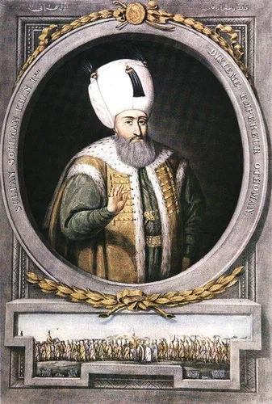

Храбрец Отелло, вы немедля нужны
Там, где грозит всеобщий враг. Осман.
Шекспир, Отелло, Акт 1, сц. 3 (перевод М. Лозинского)

Итак, султан Сулейман I написал Великому магистру Филиппу Вилье де л'Иль Адаму. О содержании этого письме есть достоверное свидетельство – письмо Великого магистра французскому королю Франциску I от 28 октября 1521 года. Текст его приведен в сборнике, изданном E.Charrière (Négociations de la France dans le Levant, tome I, (1848), p.89). Де л'Иль Адам пишет, что султан из своей ставки под Белградом написал ему 10 сентября о взятии белградской крепости, а также Земуна, Шабаца и пяти других городов.
Далее встревоженный магистр пишет:
Sire, despuys qu'il est Grand Turq, ceste-cy est la première lectre qu'il a envoyé en Rhodes, laquelle n'aceptons pour signiffiance d'amytié, mais plustost pour une menasse couverte…
«Сир, с того момента, как Большой Турок взошел на престол, это первое письмо, которое он направил на Родос, в котором содержатся не заверения в дружбе, а скорее скрытая угроза…»
Итак, мы имеем подтвержденный факт существования письма от Сулеймана магистру. Reusner в сборнике под названием Epistolarum Turcicarum variorum authoram приводит тексты одиннадцати писем и отрывков из писем на латинском языке, которые собраны из реляций различных историков ордена иоаннитов. Ни один из этих вариантов не имеет точной даты и ни один из них не соответствует форме посланий, принятых в османской дипломатии, что вынуждает считать их просто некими произвольными записями по памяти самих авторов мемуаров, а не строгими документами. В томе II l'Histoire de Malte, который является переводом с итальянского издания Bosio (t. II, liv. XVIII, p. 627), историк Vertot приводит текст этих посланий, считая, что он аутентичен подлинному (заметим, что письма султана были вообще-то написаны на греческом языке). Вот как выглядит в этом источнике послание, которое нас интересует:
Soliman sultan par la grâce de Dieu roi des rois, souverain des souverains Lrèsgrand empereur de Byzance et de Trébizonde, très-puissanl roi de Perse, de l'Arabie, de la Syrie et de l'Egypte, seigneur suprême de l'Europe et de l'Asie, prince de la Mecque et d'Alep, possesseur de Jérusalem el dominateur de la mer universelle, à Philippe Villiers de l'Isle-Adam, grand maître de l'île de Rhodes, salut. Je te félicite de ta nouvelle dignité et de ton arrivée dans tes états: je souhaite que tu y règnes heureusement et avec encore plus de gloire que tes prédécesseurs. Il ne tiendra qu'à loi d'avoir part dans notre bienveillance. Jouis donc de notre amitié, et, comme notre ami, ne sois pas un des derniers à nous féliciter des conquêtes que nous venons de faire en Hongrie où nous nous sommes rendu maître de l'importante place de Belgrade, après avoir fait passer par le tranchant de notre redoutable épée tous ceux qui ont osé nous résister. Adieu. – De notre camp, ce... et de l'hégire, ce...
«Сулейман, Султан милостью аллаха, султан султанов, владыка владык, великий император Византии и Трабзона, всесильнейший султан Персии , Аравии, Сирии и Египта, Высший правитель Европы и Азии, хранитель Мекки и Алеппо, владыка Иерусалима и господин всех морей, приветствует Филиппа Вилье де л'Иль Адама, Великого Магистра острова Родос. Я поздравляю тебя с вступлением в новую должность и с прибытием в свое государство. Желаю тебе править в нем счастливо, с еще большей славой, чем твои предшественники. У меня нет других стремлений, кроме пожелания добра. Пользуясь нашим дружеским расположением, и как наш друг, не окажись последним среди тех, кто поздравит нас с нашими завоеваниями, совершенными в Венгрии, где мы вернули самое важное – Белград, после чего острием своего грозного меча уничтожим всех, кто будет противостоять нам. Прощай…»
Сулейман, который с мальчишеских лет мечтал о захвате Родоса, недвусмысленно сообщал: момент настал. К началу штурма призывал его и любимый корсар Куртоглу, жаждавший отмщения, поощряла его и информация о состоянии обороны Родоса, полученная от предателей. О них мы уже говорили и подробнее скажем ниже. Отправив упомянутое выше письмо, султан, видимо, посчитал, что он исполнил предписанный кораном ритуал оповещения противника о начале войны и предъявления ему требования о сдаче.
Силы, которыми располагал орден на Родосе, к этому моменту значительно увеличились за счет притока рыцарей из Европы. Самая высокая численность рыцарей ордена к этому времени из тех, которые приводятся в источниках, составляет 700 человек. Кроме того, в крепости имелось еще от 4000 до 5000 воинов, находящихся на службе ордена, и несколько отрядов, составленных из добровольцев-жителей города. Как мы уже упоминали, в крепость были переведены и экипажи большинства кораблей госпитальеров, находившихся в гаванях Родоса. Значительную ценность представлял отряд лучников, только что прибывших с Крита, численностью до 500 человек. В свете всех этих данных оценки некоторых историков ордена (в частности, Fontanus, De bello Rhodio) о том, что численность вооруженного контингента защитников Родоса не превышала 5000 человек, выглядят заниженными. Хотя и в таком виде число защитников было на порядок ниже численности атакующих.
О них мы поговорим в следующий раз.